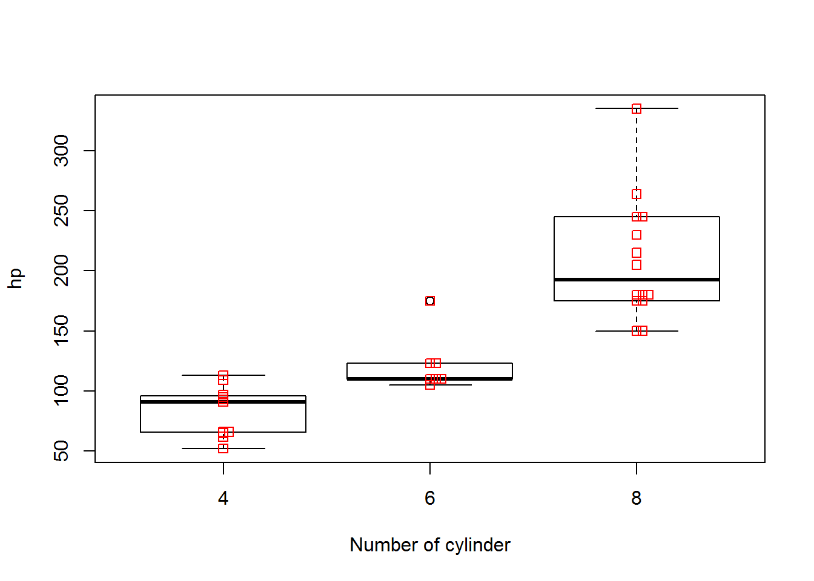
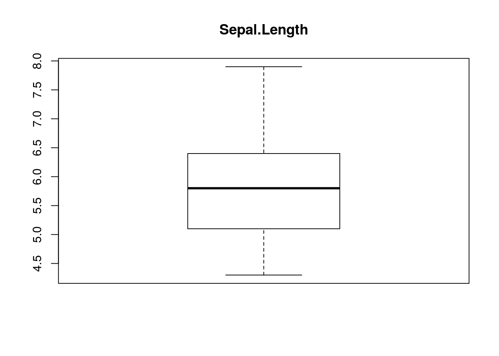

# 組込データセット"mtcars"を読み込む
data(mtcars, package="datasets")
# シリンダー数を層別因子にする
mtcars <- within(mtcars, {
f.cyl <- as.factor(cyl)
})
# シリンダー数毎のエンジン出力を層別プロットする
boxplot(hp~f.cyl, data=mtcars, id.method="y", xlab="Number of cylinder", ylab="hp")
# ドットチャートを上書きする
stripchart(hp ~ f.cyl, vertical=TRUE, method="stack", data=mtcars, add=TRUE, col="red")
# 組み込みデータセット"iris"を読み込む
data("iris")
# データセットを代入しておくとデータセット名が変わっても処理を変えずに済みます
x <- iris
x.lab = "Species"
y.lab = "Petal.Length"
# 層別データを抽出する
type <- unique(x$Species)
# 層別データを描く際の色を設定する
cols <- RColorBrewer::brewer.pal(length(type), "Accent")
# 横軸の範囲を設定する(全データ用＋層別用＋1)
x.range = length(type) + 2
# 空の描画を行う(boxplotは高水準描画関数なので空の描画で軸を用意しておく)
plot(0, 0, type = "n", xlim = range(0:x.range), ylim = range(x[, -5]),
xlab = x.lab, ylab = y.lab, axes = FALSE)
# 最初に全データに対する箱ひげ図を描画する（上書き）
with(x, boxplot(Petal.Length, add = TRUE))
# 次に層別のデータに対する箱ひげ図を描画する（上書き）
for (i in 1:length(type)) {
with(x, boxplot(Petal.Length[Species == type[i]],
at = i + 1, col = cols[i], add = TRUE))
}
# 最後に横軸名を描画する(除く全データ)
axis(1, at = 1:length(type)+1, labels = type, tick = TRUE)